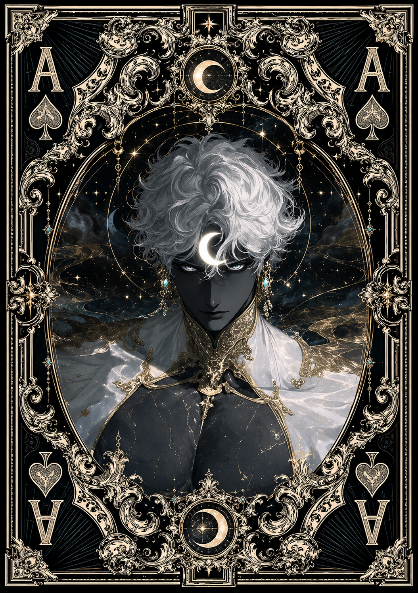

| Race | Lunar Spirit |
| Gender | Male |
| Age | Unknown |
| Nation | Umbrawood |
| Weapon | Moonlight Crescent |
| Magic | Lunar Magic |
Umbrel is a mysterious lunar entity who occasionally appears near a secluded lagoon hidden within Umbrawood. Very little is known about his origin or how long he has wandered through Eryndor. What is clear is that he is searching for a way to return to the moon, a place he instinctively recognizes as his true home.
Quiet and difficult to communicate with, Umbrel has only a limited understanding of spoken language. Because of this, he often relies on gestures, expressions, and simple words to interact with others. Despite his mysterious appearance, his behavior is surprisingly childlike: he is curious, easily fascinated, and tends to follow those he trusts with unwavering loyalty.
Umbrel possesses an extraordinary affinity for lunar energy and is capable of wielding powerful Lunar Magic. He can gather and shape moonlight into concentrated energy, while his Moonlight Crescent acts as a manifestation of that power when he needs to defend himself. His magical potential is considerable, although his peaceful and innocent nature makes him far less dangerous than his abilities might suggest.
His appearances around Umbrawood remain unpredictable, sometimes disappearing for long periods before returning to the lagoon without explanation. Umbrel seems guided by an instinctive connection to the moon above him, patiently searching for something—or someone—that might finally show him the path back home.